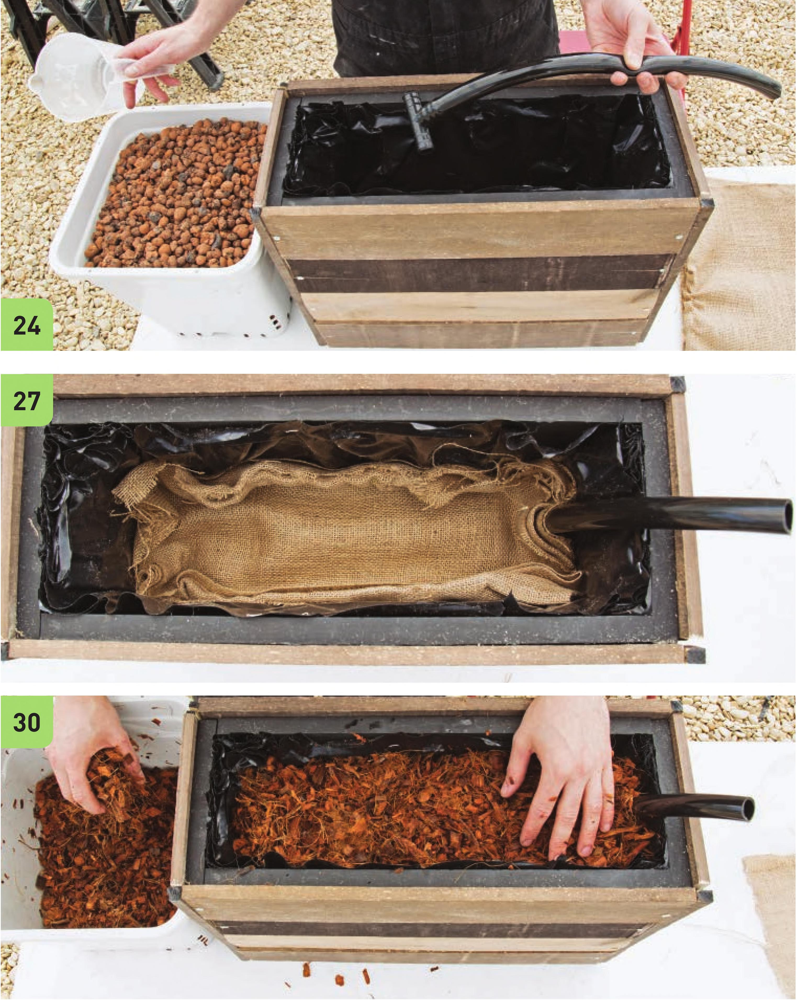

Install the Inlet Pipe and Substrate 20 Assemble the inlet pipe. Attach an 1 8" piece of W vinyl tubing to the 3A" tee. 21 Prepare the substrate. 22 R inse the expanded clay to wash off fine clay particles. 23 Soak the coco chip block to expand it. 24 Position the tee end of the inlet pipe on the side opposite the drainage pipe. The irrigation water will enter the inlet pipe and then flow across the bottom of the bed and drain from the drain pipe at the opposite end. Fill the bottom of the bed with clay pellets while positioning the inlet pipe to hold it in place. 25 Fill the bed with clay pellets until the drainage pipe is partially covered. Do not bury the drainage pipe too deep or the system will drain before the upper level of substrate has access to water. 66 DIY HYDROPONIC GARDENS
